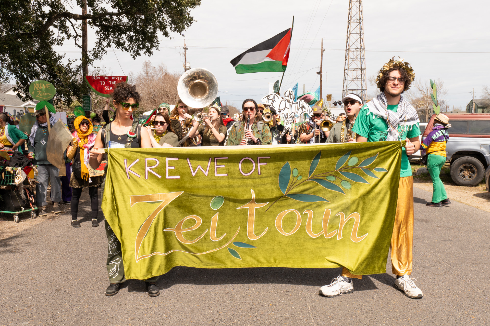
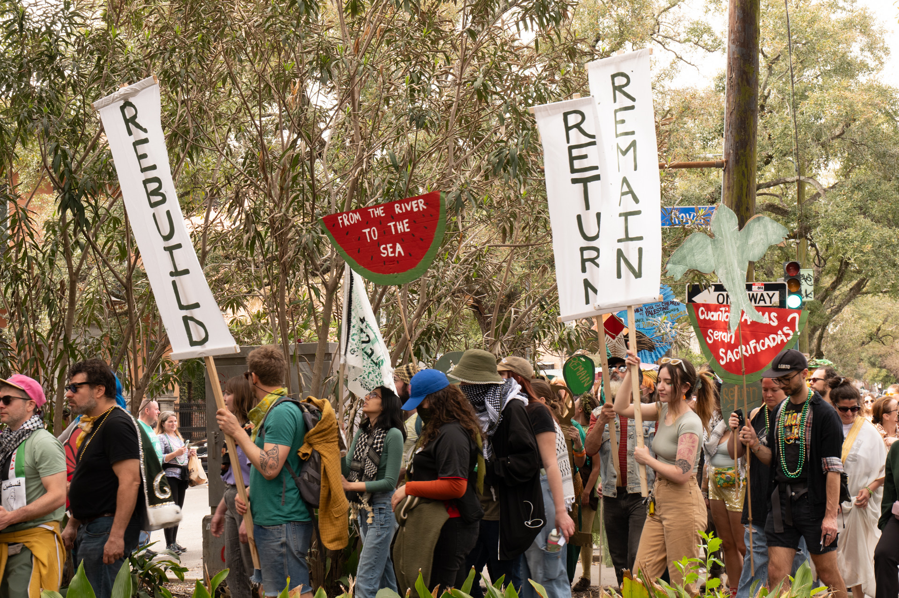

The Krewe of Zeitoun is a project in the radical spirit of New Orleans' Carnival, merging the beauty and power of ancient traditions of festival and celebration with contemporary solidarity in the streets.

We hold parades and processions, plan social and fundraising events, and organize work parties and art builds to get our supporters more concretely involved in Palestine solidarity work. Zeitoun means "olive" in Arabic, an image that celebrates the interdependent relationship with the people and land of Palestine who have shaped and supported each other since time immemorial.The Krewe of Zeitoun is a membership-based project. Anyone can sign up by clicking here.

Membership dues are $5/month or $60 a year. This money funds not only the NOLA Musicians for Palestine, but will also be used for direct aid to Palestine and Palestinian-led organizations. We also welcome existing organizations and collective projects to join the Krewe and collaborate on our projects and events.